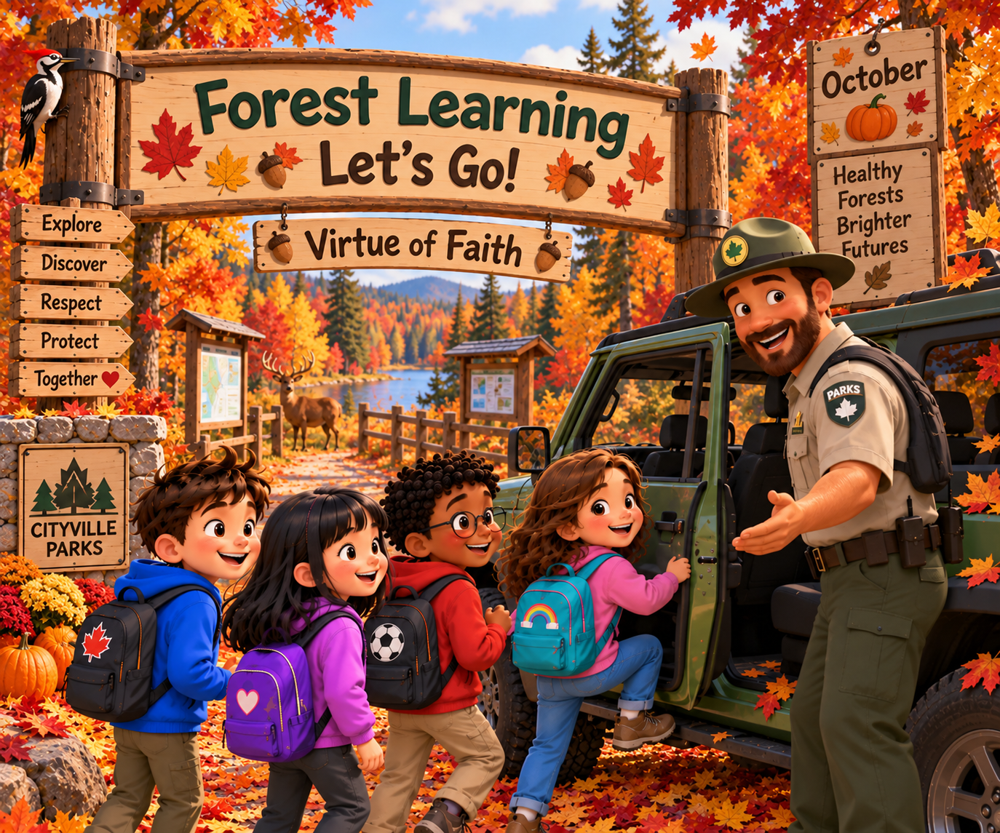

🍁🌲 Fall Language Path 1
Five themed days of learning
Choose your path, then choose Mon Aquarium, Tues Bike Ride, Wed Tractors, Thursday Boating, or Friday Cave Explore. Each day opens one scrollable page with twelve literacy activities, including a theme cloze and vocabulary match. 🦊🐈
Choose a path 🐾
🔊 Each question has slow recorded narration. A new Hear button stops the previous recording. Your progress is saved in this browser.